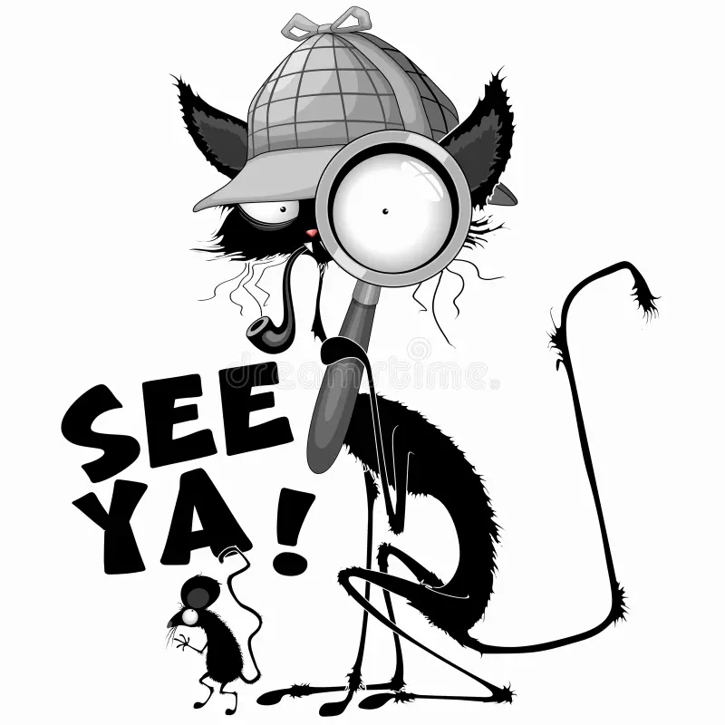

> CATNESS EVERYDAY
your one-stop shop for cat food, cat memes, and involuntary cat-euphoria.
$ sudo rm -rf /our-loyalty-program
> Password: ********▋
> inc0rr3ct, s0rry. the overlord cat typed that password with her tail. twice.
$ who is the boss around here
> The overlord cat (wearing the admin hat she stole at 2am).
$ grep -r "the flag" .
> no results. the flag was not buried in the cat litter. yet.
> THE INCIDENT REPORT (as dictated by the cat, via paw-slams on the keyboard)
EVIDENCE 1 - the old sysadmin

The cat walked in, knocked over one (1) coffee mug, and the entire IT department surrendered. She demanded the source code be "seasoned with catnip and recompiled with extra purring".
EVIDENCE 2 - the boss lady

She reviewed our login form and said: "the box is fine, but the rabbit hole inside it smells wrong. also your captcha is a mouse. i ate it. meow."
EVIDENCE 3 - you, probably
Attempts to reach /admin.php are met with a single word: NOOOOPE. The pen-testing cat has patched everything, using a blanket, a cardboard box, and spite.
EVIDENCE 4 - the last bug on the site

Q: what did the cat do with the website's bugs?
A: chased them out the front door. see ya. Q: what did she do with the flag?
A: that is a very funny question. she swallowed it. then she re-committed it somewhere rude.
> CAT-OPS DEMANDS (non-negotiable, paw-gotiated)
| # | demand | status |
|---|---|---|
| 1 | treats before every deploy | provisionally yum'd |
| 2 | world domination planned around nap schedule | in progress (napping) |
| 3 | all hear-me-out emails must include cat pics | HEAR ME OUT. |
| 4 | flipping the page upside down is now a feature, not a bug | it happened anyway |
| 5 | the flag stays hidden or we release the clawboards | enforced since 3:47am |
$ cat /etc/confessions.txt ▋
> i, the overlord cat, did hack this website because there was not enough cat content on it. the page is now 99.7% cat. i regret nothing.
> as for the flag: i have hidden it where all cats hide things. in the source. inside the comments.
> and i have protected it with the two most sacred cat rituals: (1) the page fell off the table and landed upside-down. (2) the 13-days-of-catnip ceremony.
> a cat of good taste can sniff it out in seconds. can you?